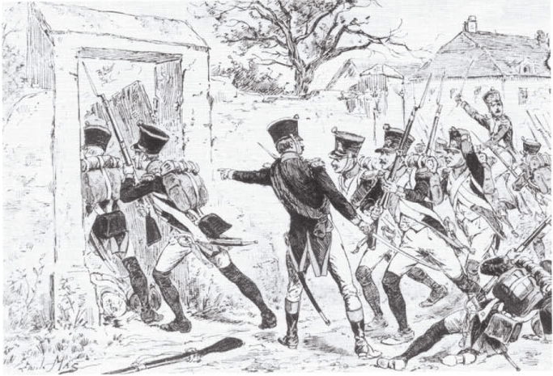
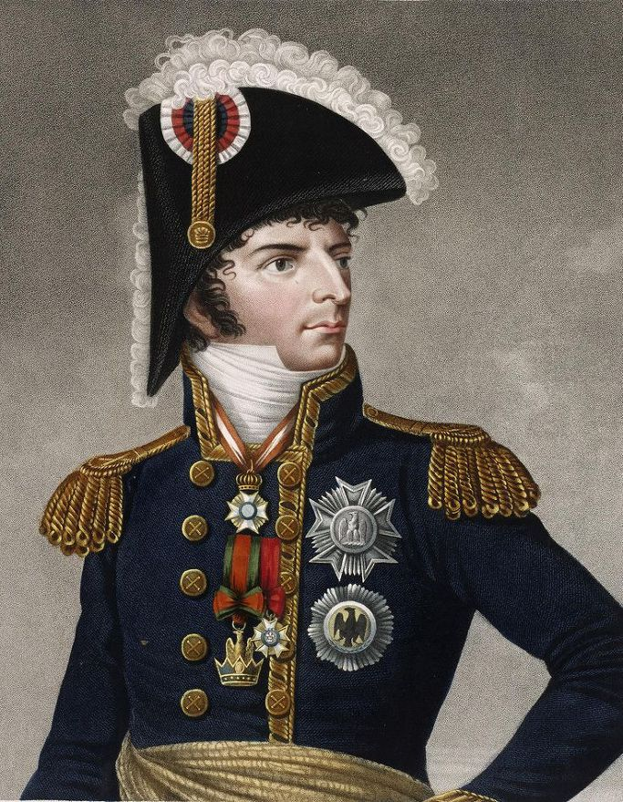
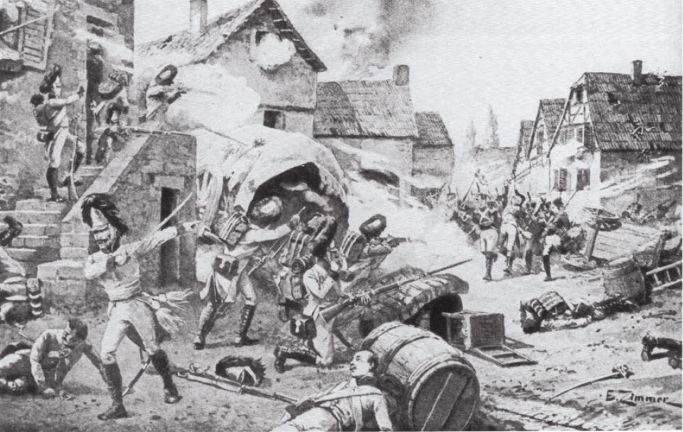

바그람 전투 (제8편) - 아더클라의 혈전
게시: 2017-07-30T19:37:34+09:00
새벽부터 동쪽의 포성을 듣고 혹시 요한 대공의 군대가 쳐들어온 것인가 깜짝 놀라 병력을 이끌고 다부의 전선으로 달려갔던 나폴레옹은 쉴 틈이 없었습니다. 그는 동쪽의 소란이 가라앉기도 전에 이번엔 중앙부에서 들려오는 포성에 이건 또 뭔가 싶어 말을 달렸습니다. 현장에 도착한 그는 상황을 파악하고는 대노했습니다. "어제 밤부터 베르나도트 저 허풍선이는 병신짓만 골라 하는구나 !"
다행히 그는 어제 밤 베르나도트 없이 열었던 작전 회의에서 베르나도트를 지원하기 위해 마세나의 병력을 좌익에서 중앙부로 이동시킨 바 있었습니다. 해가 밝아오는 상황에서, 그의 눈에 마세나의 병력이 현장에 도착하는 것이 보였고, 곧 이어 마세나의 눈처럼 하얀 색의 무개마차도 시야에 들어왔습니다. 마세나는 베르나도트 못지 않게 돈 욕심 많고 터무니없이 부풀어오른 자아를 가진 사람이었으나 베르나도트와는 달리 군사적 자질은 자신에 버금가는 실력자였습니다. 나폴레옹은 마세나에게 상황을 설명하고, 즉각 아더클라를 탈환하도록 했습니다.
마세나는 생-시르(Saint-Cyr)의 사단을 선두로 아더클라로 돌격해 들어갔습니다. 이들의 공격에 대해 오스트리아군도 꽤 솜씨있게 대응했습니다. 슈투터하임(Stutterheim)의 오스트리아 보병들이 마을 앞에 있던 도랑에 매복해 있다가 생-시르의 병사들이 지근거리에 근접하자 일제히 고개를 들고 일제 사격을 퍼부은 것입니다. 하지만 프랑스군은 그 정도의 반격에 흔들리지 않았고, 전투는 곧 아더클라 마을의 벽과 가옥을 끼고 골목마다 벌어지는 혼전이 되어 버렸습니다. 결국 프랑스군의 공격에 오스트리아군은 아더클라에서 밀려났습니다.

(아더클라 마을 안으로 쳐들어가는 생-시르 사단 휘하 제4 전열보병 연대 병사들의 모습입니다.)
아더클라 외곽에서 이 광경을 보고 있던 베르나도트는 아마 의기양양했을 것입니다. 자신의 예측대로, 아더클라 안에 웅크리고 있는 것보다는 그 마을을 비워놓고 있다가 반격을 하는 것이 더 효율적이라는 것이 입증된 셈이었으니까요. 문제는 그 영광의 순간에 자신이 없다는 것이었습니다. 그는 서둘러 휘하 작센 병사들을 이 공격에 가담시켰습니다. 특히 막도날에게 빌려주었던, 비교적 온전한 상태로 남아있던 뒤파(Dupas)의 사단도 오스트리아군의 동쪽 측면울 공격하기 시작했으므로, 베르나도트는 기세를 타고 작센 병사들을 규합하여 기세 좋게 밀고 나갔습니다.
그러나 일이 그렇게 쉽지만은 않았습니다. 생-시르와 베르나도트의 병력이 아더클라를 관통하여 더 북쪽으로 뚫고 나가려하자, 아더클라 외곽에서 대기하고 있던 벨가르드의 예비 병력이 또 반격을 해온 것입니다. 게다가 이 반격에는 상황을 지켜보고 있던 카알 대공이 직접 참여했기 때문에 오스트리아군의 사기가 매우 높았습니다. 대기하고 있던 오스트리아군의 포격에 리히텐슈타인 대공의 기병대까지 쳐들어오자 생-시르와 베르나도트의 병력은 견디지 못하고 물러나고 말았습니다. 특히 베르나도트의 작센군은 어제부터 패전을 거듭하여 사기가 형편없었는데, 이번에 또 이런 역경을 맞이하자 후퇴가 아니라 그야말로 무너져내려 우르르 도망치고 말았습니다.
생-시르의 사단을 지원하기 위해 몰리토르(Molitor)의 사단에게 진격 명령을 내린 마세나는 눈 앞에 벌어진 상황이 무척 난감했습니다. 몰리토르가 진격해야 할 길을 이 작센 패잔병들이 가로 막고 있었던 것입니다. 별로 인품이 좋지 않고 오만하고 몰인정했던 마세나는 이 하찮은 방애물들에게 주저하지 않고 발포를 명했고, 어제 밤에 이어 백주대로에 아군으로부터 총격을 받은 작센군은 그야말로 거미새끼처럼 흩어져 마르히펠트 평원을 가로질러 흩어졌습니다. 일설에 따르면 이때 어지럽게 도주하던 작센 병사들은 나폴레옹의 사령부가 있는 라스도르프(Raasdorf) 외곽까지 도망쳐왔고, 이들의 선두에는 베르나도트도 포함되어 있었다고 합니다. 라스도르프 외곽에서 이 몰골의 베르나도트와 딱 마주친 나폴레옹은 그동안 쌓였던 분노가 폭발하여 '이것이 네가 말하던 반석같은 지휘력이냐 !'라고 고함을 지르며 현장에서 그를 군단장의 보직에서 해임해버렸다고 합니다.

(프랑스군 원수 복장의 베르나도트입니다. 원래 그는 오스트리아와의 전쟁이 시작될 때 병중이었다고 합니다. 그런데 별로 탐탁치 않은 작센인들로 구성된 제9 군단장으로 임명되고, 나폴레옹의 심복이자 참모장인 베르티에가 자신의 군단의 출정 준비에 대해 이런저런 눈에 보이지 않는 방해를 한다는 느낌을 받자 전장에 나서기 전부터 보직을 사임하겠다고 나폴레옹에게 청원했다고 합니다. 그러나 나폴레옹은 원치 않는 베르나도트를 부득부득 전장으로 끌고 나갔고, 결국은 사단이 나고 말았습니다. 이 모든 일 뒤에는 뭔가 석연치 않은 구석이 있긴 합니다.)
나폴레옹과 베르나도트가 이렇게 마주쳤다는 이야기는 너무 극적이라서 100% 믿기는 어렵습니다. 다른 설에 따르면 베르나도트가 먼저 사의를 표시했다고 합니다. 이 설에 따르면 이날 공격을 위해 자신의 군단 소속이었던 뒤파(Dupas) 장군의 프랑스 사단에게 자신의 공격을 지원하도록 명령했으나, 뜻 밖에도 뒤파는 '황제로부터 현 위치를 고수하라는 직접 명령을 받았다'라며 거부했습니다. 그 때문에 자신의 공격이 돈좌되고 많은 작센 병사들이 희생되자, 격분한 베르나도트는 나폴레옹을 만나자마자 '왜 지휘 체계를 무시하고 자신의 사단을 마음대로 묶어 두었는가'를 따지며 이럴 바에야 사직하겠다고 선언을 했다는 것입니다.
확실한 것은 정말 베르나도트가 정말 이날 현장에서 해임되어 귀국 조치되었다는 것입니다. 그가 이끌던 제9 군단의 지휘권은 어떻게 되냐고요 ? 어차피 그의 제9 군단은 이미 다 녹아내려서 5천명 이하의 뿔뿔이 흩어진 패잔병만 남아 있었으므로, 후임이고 뭐고 필요가 없었을 것입니다.

(오스트리아군 척탄병들이 몰리토르의 프랑스군을 공격하고 있습니다. 오스트리아군이 쓰고 있는 저 독특한 모자는 오스트리아군 뿐만 아니라 프랑스군 등 대부분의 유럽 군대에서 척탄병들만이 쓸 수 있는 모자로서, 높이 솟은 모양에 털가죽이 달려 있었습니다. 당시 척탄병 부대는 수류탄 휴대 여부와는 전혀 무관하게 그냥 키가 큰 병사들을 뽑아 편성했는데, 키 큰 병사들이 그런 모자를 쓰면 더욱 덩치가 커보이는 효과가 있었습니다.)
아무튼 아더클라는 이렇게 생-시르가 탈환했다가 다시 잃었다가 오전 10시 경 다시 몰리토르가 재탈환하는 등 혈전의 현장이 되고 있었습니다. 하지만 결국 카알 대공이 직접 이끈 오스트리아군의 공격이 더 많은 병력을 가지고 있었고, 아무리 프랑스군이 용감하고 숙련되어 있다고 하더라도 숫자에는 당할 방법이 없었습니다. 정오 가까이 즈음해서는 혈전 끝에 결국 몰리토르의 사단도 오스트리아군에게 밀려났고, 프랑스군은 중앙을 돌파당하는 일대 위기를 맞이했습니다. 뿐만 아니었습니다. 기세가 오른 오스트리아군은 루스바흐 언덕 위의 전선 전체에 걸쳐 일제히 포격을 개시하여 언덕 아래에 있던 프랑스군을 강타하기 시작했습니다. 고지 위에서 내리 쏘는 포격은 확실히 프랑스군을 압도했습니다. 어차피 전장의 병사들은 언제든 대포밥이 될 수 있는 신세였으므로 그 정도의 포격에 흔들리는 일은 없었습니다만, 전선 중앙부가 관통당해 자신들의 등 뒤에 펼쳐진 평원 위로 작센군과 프랑스군 패잔병들이 우르르 도망치는 모습은 프랑스군의 사기를 바닥으로 떨어뜨렸습니다. 병사들의 동요를 막기 위해 나폴레옹은 전체 전선을 따라 말을 달려 자신의 모습을 보여주며 병사들을 진정시켜야 했습니다.
아마 나폴레옹은 베르나도트를 찢어죽이고 싶은 심정이었을 것입니다. 그는 이 모든 재앙이 베르나도트가 마음대로 위치를 이탈했기 때문이라고 생각했으니까요. 하지만 그건 꼭 맞는 이야기는 아니었습니다. 이유야 어쨌든, 가장 약한 부대를 거느린 가장 못 믿을 부하를 가장 중요한 위치에 배치한 것은 나폴레옹 본인이었습니다. 따지고 보면 또 아더클라가 나폴레옹에게 가장 중요한 위치도 아니었습니다. 나폴레옹 작전의 핵심은 다부가 공격 준비를 하던 동쪽 마르크그라프노이지들 방면이었습니다. 그러나 나폴레옹은 자기가 공격할 생각만 했지 카알 대공이 먼저 치고 나올 것이라는 생각은 하지 못하고 있다가 오스트리아군에게 선수를 빼앗기는 바람에 모든 작전이 엉망으로 꼬이게 된 것이었습니다.
하지만 이 모든 것은 서막에 불과했습니다. 무너지는 아더클라의 바로 동쪽 측면에는 우디노와 막도날, 외젠 등의 군단이 대기 중이었으므로 어떻게든 이 구멍만 틀어막으면 저 동쪽 끝에서 다부가 준비하던 나폴레옹의 진짜 주먹이 날아가게 되어 있었습니다. 나폴레옹은 그것을 믿고 있었으므로 아직 패배한다는 생각은 전혀 하지 않고 있었습니다. 그러나 비장의 주먹을 준비 중인 것은 오스트리아군도 마찬가지였습니다. 카알 대공에게도 아더클라는 그저 견제구 또는 잽에 불과 했고, 그의 진짜 한방인 강력한 훅은 저 남서쪽 아스페른 쪽에서 날아들고 있었습니다.
Source : The Reign of Napoleon Bonaparte by Robert Asprey
With Napoleon's Guns by Jean-Nicolas-Auguste Noel
http://www.historyofwar.org/articles/battles_wagram.html
https://en.wikipedia.org/wiki/Battle_of_Wagram
http://www.napolun.com/mirror/napoleonistyka.atspace.com/Battle_of_Wagram_1809.htm#battleofwagram94
https://en.wikipedia.org/wiki/Charles_XIV_John_of_Sweden